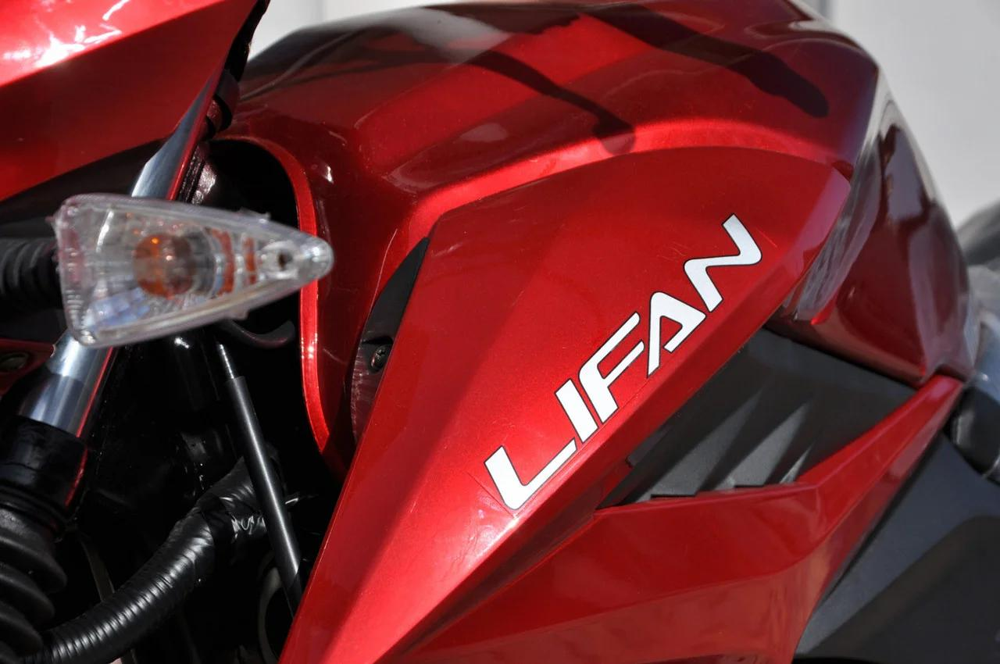
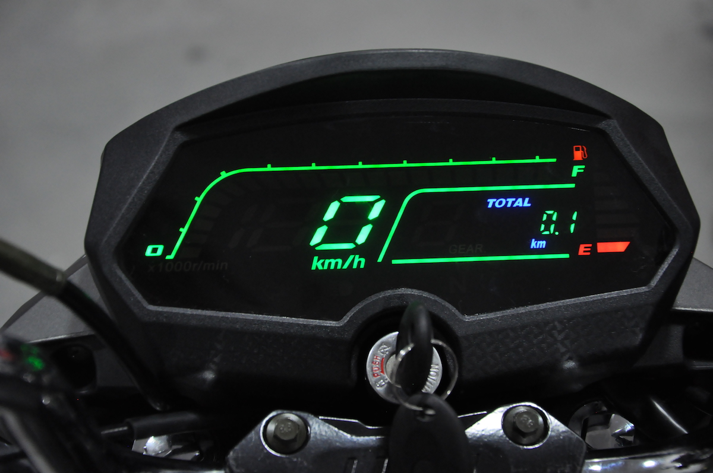

Бак мотоцикла вміщує 13 літрів палива, включаючи 2 літри резерву, тобто на одному баку Ви зможете проїхати п'ять сотень кілометрів і ще дотягнути до заправки. Практичним рішенням є і те, що бічні накладки в зоні колін виконані з матованого пластика темно- сірого кольору. Вони, до речі, однакові на всіх варіантах незалежно від кольору моделі. Оскільки дане місце майже постійно в контакті з внутрішньою частиною ноги, лакована пофарбована поверхня через деякий час затерли б і втратила зовнішній вигляд. В даному варіанті виконання це виключено - і зовнішній вигляд гідний і, знову ж таки, практичність на висоті. 
Якщо «погуглити», можна переконатися в тому, що дана продукція дійсно якісно відрізняється від багатьох аналогічних електричних елементів в кращу сторону. У стандартному виконанні приладової панелі присутній одометр, тахометр, спідометр і індикатор рівня палива в баку. Важливою відмінністю нової приладів є те, що в конструкції використані так звані "піксельні світлодіоди". Особливість їх у тому, що яскравість світіння кожного з них має спрямованість яка забезпечує рівномірність світіння і високу інтенсивність. У чому сенс, запитаєте Ви? А в тому, що і в сутінках і при яскравому сонці і в темряві ефективність світіння залишається Високонтрастний і легко зчитується. Це не старі ЖК-панелі, які часто в сонячну погоду вимагають "всматріванія" для читання показань. Друга фішка в тому, що два ключові параметри швидкість і обрана передача - істотно збільшені в розмірах. Погодьтеся, що набагато краще видно і швидкість і активну в даний момент часу передачу Не потрібно концентруватися на маленькому віконці, стандартному для багатьох інших моделей. Причому позиція "Нейтраль" відображається на рівень нижче і при включеній будь-якій передачі не відображається - точно не заплутаєтеся. Впевнені, що це оцінять і ті у кого зір ослаблене і ті хто просто має "досвід спілкування" зі стандартними приборка мотоциклів. 